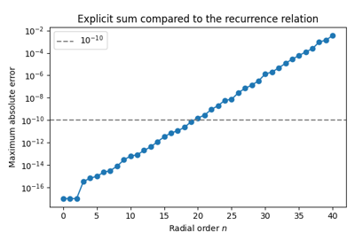
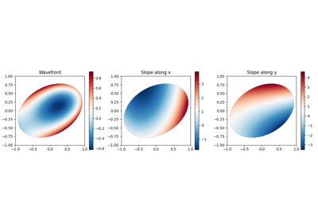
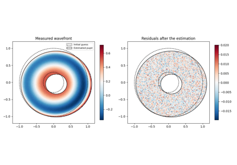
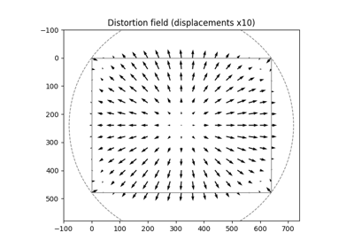

 Accuracy and speed at high orders Accuracy and speed at high orders  Wavefront analysis on an elliptic pupil Wavefront analysis on an elliptic pupil  Alignment of an annular pupil Alignment of an annular pupil  Distortion of a sensor with a Zernike model Distortion of a sensor with a Zernike model Gallery generated by Sphinx-Gallery